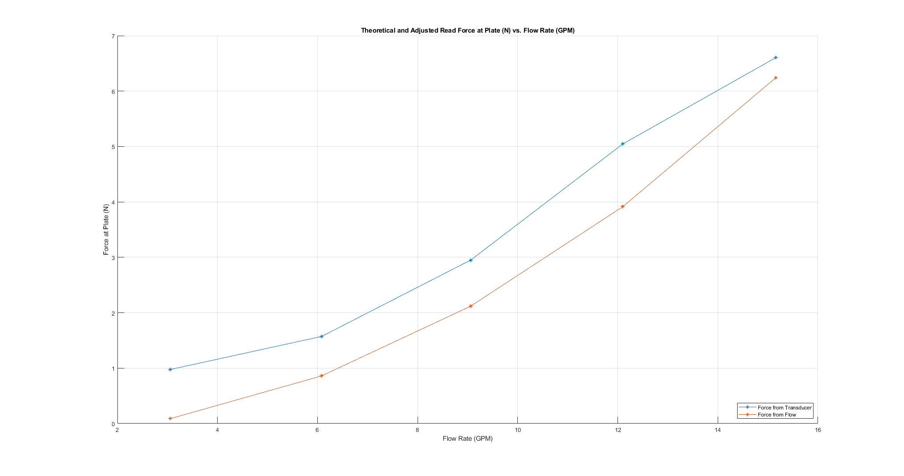
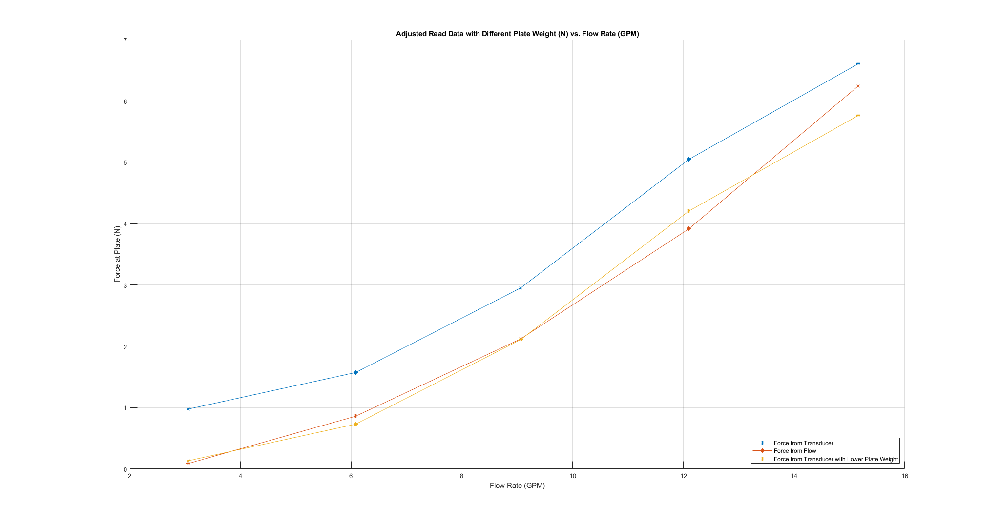

Calculations for Lab 4: Linear Momentum
This code written by Michael White
clear; clc; close all; % Read in data averages from experimentation dataTable = readtable('rawDataAverages.xlsx'); % Setup initial known parameters params.nozzleDiam_in = 0.53; params.plateMass_kg = 0.6028; params.height_in = 4.860; params.density_kgm3 = 997.83; % Density of water @ 21.7 C params.g = 9.81; % m/s^2 % Convert values to metric params.nozzleDiam_m = params.nozzleDiam_in*0.0254; params.height_m = params.height_in*0.0254; dataTable.AvgF_transducer_N = dataTable.AvgF_transducer_lbf*4.4482216; dataTable.AvgF_transducer_N_std = dataTable.AvgF_transducer_lbf_std*4.4482216; % Calculate additional parameters params.plateWeight_low_N = 1.14*4.4482216; params.plateWeight_N = params.plateMass_kg*params.g; params.Area_m2 = pi/4*params.nozzleDiam_m^2; params.waterWeight_N = params.density_kgm3*params.Area_m2*... params.height_m*params.g; % Generate flow in metric and find corresponding velocities dataTable.AvgQ_m3s = dataTable.AvgQ_GPM * 6.31e-5; dataTable.AvgQ_m3s_std = dataTable.AvgQ_GPM_std * 6.31e-5; dataTable.AvgV_ms = dataTable.AvgQ_m3s/params.Area_m2; dataTable.AvgV_ms_std = dataTable.AvgQ_m3s_std/params.Area_m2; % Identify the supposed force from calculation and the measured force dataTable.calcWaterForce_N = (params.Area_m2*params.density_kgm3*(dataTable.AvgV_ms).^2)... -params.waterWeight_N; dataTable.calcWaterForce_N_std = (params.Area_m2*params.density_kgm3... *sqrt(2*(dataTable.AvgV_ms_std).^2)); % Identify the water force based on the plate weight and transducer reading dataTable.readWaterForce_N = -1*(dataTable.AvgF_transducer_N-params.plateWeight_N); dataTable.readWaterForce_N_std = dataTable.AvgF_transducer_N_std; dataTable.readWaterForce_low_N = -1*(dataTable.AvgF_transducer_N-params.plateWeight_low_N); dataTable.readWaterForce_low_N_std = dataTable.AvgF_transducer_N_std; % Calculate percent error between theoretical and adjusted read values for i = 1:length(dataTable.readWaterForce_N) dataTable.percentError(i) = ... abs(dataTable.readWaterForce_N(i)-dataTable.calcWaterForce_N(i))... /dataTable.readWaterForce_N(i); end % Separate data into specified flows noFlows = dataTable([1,8],:); Flows = dataTable(2:6,:); zeroForceFlow = dataTable(7,:); % Display tables in the order they appear in the report disp('The raw averages from experimental data:'); display(Flows(:,1:4)); disp('The metric flow rates and fluid velocities:'); display(Flows(:,7:10)); disp('Converted transducer forces:'); display(Flows(:,5:6)); disp('Theoretical Forces and Adjusted Read Forces:'); display(Flows(:,11:14)); disp('Theoretical - Read Forces Percent Error:'); display(Flows(:,17)); disp('Zero Flow Readout Data:'); display(noFlows(:,1:4)); disp('Adjusted Read Force Data Using Ending Transducer Reading:'); display(Flows(:,15:16)); % Plot results without changed plate weight figure; hold on; set(gcf,'Position',get(0,'Screensize')); grid on; plot(Flows.AvgQ_GPM,Flows.readWaterForce_N,'*-'); plot(Flows.AvgQ_GPM,Flows.calcWaterForce_N,'*-'); legend('Force from Transducer','Force from Flow','Location','Southeast'); xlabel('Flow Rate (GPM)'); ylabel('Force at Plate (N)'); title('Theoretical and Adjusted Read Force at Plate (N) vs. Flow Rate (GPM)'); % Plot results with changed plate weight figure; hold on; set(gcf,'Position',get(0,'Screensize')); grid on; plot(Flows.AvgQ_GPM,Flows.readWaterForce_N,'*-'); plot(Flows.AvgQ_GPM,Flows.calcWaterForce_N,'*-'); plot(Flows.AvgQ_GPM,Flows.readWaterForce_low_N,'*-'); legend('Force from Transducer','Force from Flow',... 'Force from Transducer with Lower Plate Weight','Location','Southeast'); xlabel('Flow Rate (GPM)'); ylabel('Force at Plate (N)'); title('Adjusted Read Data with Different Plate Weight (N) vs. Flow Rate (GPM)');
The raw averages from experimental data:
5×4 table
AvgQ_GPM AvgQ_GPM_std AvgF_transducer_lbf AvgF_transducer_lbf_std
________ ____________ ___________________ _______________________
3.056 0.01075 1.11 2.3406e-16
6.079 0.014491 0.976 0.005164
9.061 0.01792 0.666 0.005164
12.099 0.026854 0.195 0.0052705
15.156 0.020656 -0.155 0.0052705
The metric flow rates and fluid velocities:
5×4 table
AvgQ_m3s AvgQ_m3s_std AvgV_ms AvgV_ms_std
__________ ____________ _______ ___________
0.00019283 6.783e-07 1.3548 0.0047656
0.00038358 9.1441e-07 2.695 0.0064244
0.00057175 1.1307e-06 4.017 0.0079442
0.00076345 1.6945e-06 5.3638 0.011905
0.00095634 1.3034e-06 6.719 0.0091572
Converted transducer forces:
5×2 table
AvgF_transducer_N AvgF_transducer_N_std
_________________ _____________________
4.9375 1.0411e-15
4.3415 0.022971
2.9625 0.022971
0.8674 0.023444
-0.68947 0.023444
Theoretical Forces and Adjusted Read Forces:
5×4 table
calcWaterForce_N calcWaterForce_N_std readWaterForce_N readWaterForce_N_std
________________ ____________________ ________________ ____________________
0.088693 0.00095719 0.97594 1.0411e-15
0.85951 0.0012904 1.572 0.022971
2.1197 0.0015956 2.951 0.022971
3.9141 0.0023911 5.0461 0.023444
6.2397 0.0018393 6.6029 0.023444
Theoretical - Read Forces Percent Error:
5×1 table
percentError
____________
0.90912
0.45324
0.28169
0.22433
0.055006
Zero Flow Readout Data:
2×4 table
AvgQ_GPM AvgQ_GPM_std AvgF_transducer_lbf AvgF_transducer_lbf_std
________ ____________ ___________________ _______________________
0.005 0.0070711 1.33 0
0.002 0.010328 1.14 2.3406e-16
Adjusted Read Force Data Using Ending Transducer Reading:
5×2 table
readWaterForce_low_N readWaterForce_low_N_std
____________________ ________________________
0.13345 1.0411e-15
0.72951 0.022971
2.1085 0.022971
4.2036 0.023444
5.7604 0.023444
 